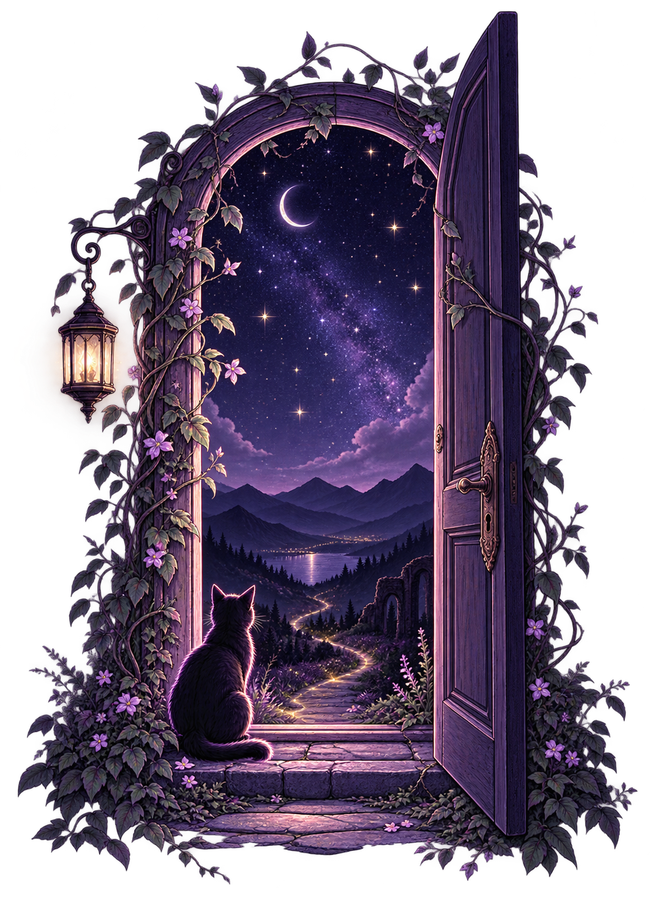

Entre páginas
Livros, vampiros e universos fantásticos.
DEPOIS DA PORTA

Todo lugar guarda um pouco de quem o construiu.
Entre códigos, histórias, desenhos e pequenas obsessões, nasceu este cantinho da internet. Um espaço em constante transformação, assim como sua criadora.
Livros, vampiros e universos fantásticos.
Uma estudante de tecnologia construindo seu próprio mundo.
Gatos, aventuras e pequenas doses diárias de felicidade.
Desenhos, carvão, criaturas e yokais.
Nem toda história termina onde imaginamos.
Tudo começou com palavras que precisavam encontrar um lugar.
Entre histórias, gatos e criaturas fantásticas, novos mundos começaram a surgir.
O que era um refúgio também se tornou um espaço de aprendizado e criação.
Ainda sendo escrito...
E a porta permanece aberta.
Há mundos inteiros escondidos entre páginas.
Cada livro guarda um universo. Qual deles você deseja explorar?
Somos feitos de pequenos universos.
Escolha uma estrela para descobrir seu significado.
Nem toda magia acontece por encanto. Algumas precisam de muitas linhas de código.
Hoje, este pequeno espaço ganhou novas formas. Uma porta encantada, uma biblioteca interativa e uma constelação de interesses passaram a fazer parte deste universo.
Aos poucos, descubro que programar também é uma maneira de contar histórias.
Entre bancos de dados, funções, testes e erros, aprendi um pouco mais sobre o funcionamento de um site além daquilo que os olhos conseguem ver.
Nem sempre o código funciona na primeira tentativa. Mas cada erro resolvido é uma pequena conquista.
Ainda existem muitas coisas para aprender, criar, descobrir e escrever.
Com curiosidade, carinho e algumas linhas de código.
Algumas palavras precisam esperar pelo momento certo.
Lacrada em 25 de novembro de 2026
🔒 Aguardando o momento certo.
Abertura: 25 de novembro de 2027
Da pessoa que sou hoje, para aquela que ainda estou me tornando.
Algumas portas guardam segredos...
Nem todas as portas precisam levar a algum lugar. Algumas existem para nos lembrar de quem somos.